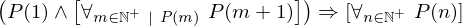
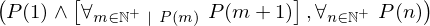

In [1]:
import proveit
# Automation is not needed when only building an expression:
proveit.defaults.automation = False # This will speed things up.
proveit.defaults.inline_pngs = False # Makes files smaller.
# import the special expression
from proveit.number.sets.integer._theorems_ import natPosInduction
In [2]:
# check that the built expression is the same as the stored expression
%check_expr natPosInduction
In [3]:
# Show the LaTeX representation of the expression for convenience if you need it.
print(natPosInduction.latex())
In [4]:
# display the expression information
natPosInduction.exprInfo()
Out[4]:
| core type | sub-expressions | expression | |
|---|---|---|---|
| 0 | Operation | operator: 12 operand: 1 |  |
| 1 | Lambda | parameter: 31 body: 2 |  |
| 2 | Operation | operator: 3 operands: 4 |  |
| 3 | Literal |  | |
| 4 | ExprTuple | 5, 6 |  |
| 5 | Operation | operator: 22 operands: 7 |  |
| 6 | Operation | operator: 12 operand: 8 |  |
| 7 | ExprTuple | 9, 10 |  |
| 8 | Lambda | parameter: 20 body: 11 |  |
| 9 | Operation | operator: 31 operand: 28 |  |
| 10 | Operation | operator: 12 operand: 13 |  |
| 11 | Conditional | value: 14 condition: 15 |  |
| 12 | Literal |  | |
| 13 | Lambda | parameter: 32 body: 16 |  |
| 14 | Operation | operator: 31 operand: 20 |  |
| 15 | Operation | operator: 29 operands: 17 |  |
| 16 | Conditional | value: 18 condition: 19 |  |
| 17 | ExprTuple | 20, 33 |  |
| 18 | Operation | operator: 31 operand: 21 |  |
| 19 | Operation | operator: 22 operands: 23 |  |
| 20 | Variable |  | |
| 21 | Operation | operator: 24 operands: 25 |  |
| 22 | Literal |  | |
| 23 | ExprTuple | 26, 27 |  |
| 24 | Literal |  | |
| 25 | ExprTuple | 32, 28 |  |
| 26 | Operation | operator: 29 operands: 30 |  |
| 27 | Operation | operator: 31 operand: 32 |  |
| 28 | Literal |  | |
| 29 | Literal |  | |
| 30 | ExprTuple | 32, 33 |  |
| 31 | Variable |  | |
| 32 | Variable |  | |
| 33 | Literal |  |